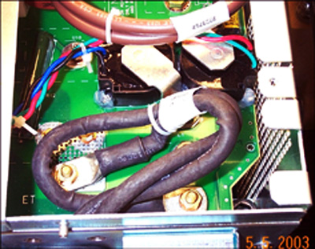
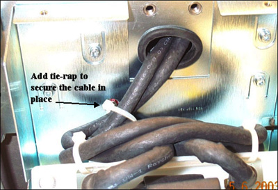
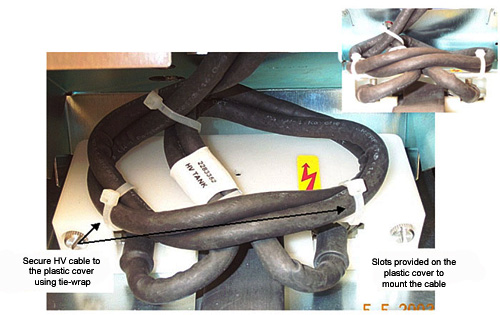
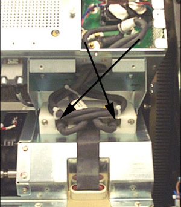

Operating Documentation
Direction 5193855-800, Rev# 4
LS 5.X RT Ltd. Access Service Information Adv
Operating Documentation |
| Required Persons | Preliminary Reqs | Procedure | Finalization |
|---|---|---|---|
| 1 | Timing Not Applicable | 15 mins | 15 mins |
This procedure routes the HV cables from the JEDI inverter to the tank in such a way that the noise induced on the DAS cable is minimized and passes IQ tests. Procedure summary
Remove EMC box cover
Route cables according to graphics
| Last Revised On: | 24 March 2008 |
| Follow ALL required safety and PPE procedures customary for your organization, when working on this product. | |
| Condition | Reference | Eff |
|---|---|---|
Only trained service personnel should service the GE CT Scanner. | - | - |
| POTENTIAL FOR MISDIAGNOSIS. | |
| IMAGE QUALITY ARTIFACTS MAY BE PRESENT. | |
| BE SURE TO ROUTE HV CABLES CORRECTLY. See Finalization Steps for IMAGE QUALITY ANALYSIS TO VERIFY THAT THE SYSTEM IS OK. |
Route and connect the HV cables in the inverter as shown below.
Illustration 1: HV Cable routing and connections in the Inverter

Add tie-wrap to secure the cable in place. Both of the cables should be routed in parallel and have one turn per every 6 inches of wire.
Illustration 2: Tie-wrapping the HV cables in place

Secure the HV cable to the plastic cover using tie wrap as shown in Illustration 3. Slots are provided on the plastic cover to mount the cable.
Illustration 3: Securing the HV cable to the plastic cover

Verify the cabling is correct as shown below. Proper routing will connect the wiring as shown by the arrows in Illustration 4.
| NOTE: | Reversing this connection will not harm the system, as long as the system passes the appropriate retest steps in Finalization. |
Illustration 4: Correct cable routing

Run Jedi Noise Test (Pro16, RT)to ensure image quality.